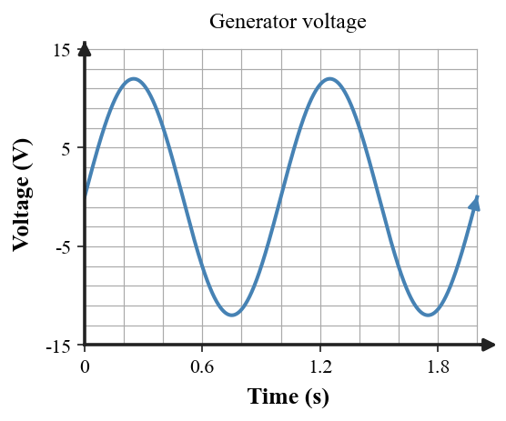

1. Why does holding a magnet completely still relative to a stationary coil not continue producing induced voltage?
2. What happens to induced voltage when magnetic conditions through a coil change more rapidly?
3. What is the role of rotation in a simple coil generator?
4. How can you recognize alternating voltage on a graph?
5. State the basic motor-versus-generator comparison in terms of electrical and mechanical energy.
6. Use the generated voltage-time graph to identify one positive-voltage interval, one negative-voltage interval, and the duration of one full cycle.

7. A bar magnet is moved into a coil, held still, and then pulled out. Describe when induced voltage should appear and how the sign can change when the motion reverses.
8. A simple generator produces 8 cycles in 4 seconds. Calculate the frequency.
9. If a generator coil rotates faster, explain how the rate of magnetic change and the frequency of the AC output are expected to change.
10. A student says a generator and motor are unrelated because one makes electricity and the other uses it. Explain the shared current-field-motion connection.
11. A student claims the meter needle moves when a magnet is held stationary inside a coil because “the magnetic field is still there.” Use the distinction between field presence and field change to correct the reasoning.
12. A generator is spun by a hand crank. Explain why increased electrical output cannot continue without a corresponding energy cost to the person or mechanism driving the crank.
13. Which change would most directly increase the rate of magnetic change through a coil?
14. A meter moves while a magnet enters a coil but returns toward zero when the magnet is held still. This supports the idea that
15. What does a zero crossing on a voltage-time graph mean?
16. If 9 cycles occur in 3 seconds, the frequency is
17. Which statement about a generator is most accurate?
18. Alternating current differs from direct current mainly because AC
19. Which modification would fix a stationary magnet-and-coil “generator”?
20. Why are motor and generator ideas often compared?